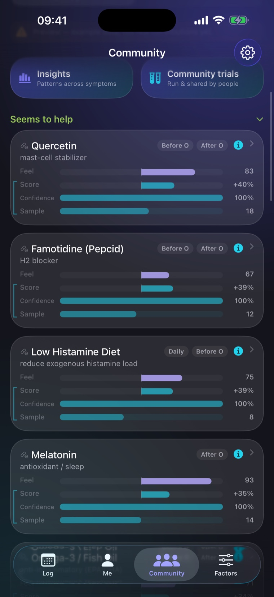
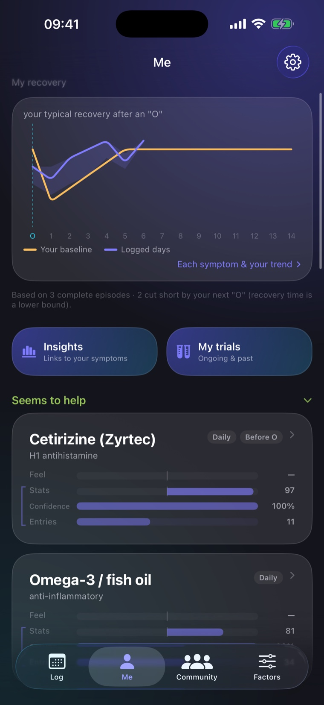
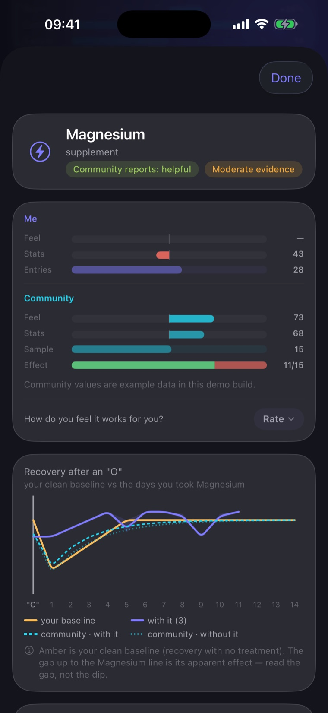

Track it privately. See what actually helps. Learn from people who get it.


It tells you how sure a result is — and says “not enough data yet” when that’s the truth.
Run a randomised on/off test on any single treatment to isolate its real effect.
Your raw logs never leave your phone. Contributing is optional and always anonymous.
Tap in your wellbeing, symptoms, and what you took — treatments, habits, and your “O” days. Under a minute.
The app learns from the contrast between your days with and without something. More days, clearer picture.
It shows what lines up with your better and worse days — with honest confidence, and “not enough data yet” when that’s the truth.
Optionally turn on anonymous sharing to compare your pattern with people like you. Your raw logs never leave your phone.
A clear recovery curve from a minute of logging a day.
Your result next to the anonymous community pattern.

Built by one person, for a condition that’s under-researched and too often overlooked. If it helps you, a small donation keeps the servers running and new features coming.
♥ Support the project Optional, and separate from the app. Thank you.Post-orgasmic illness syndrome (POIS) is a rare condition in which people experience symptoms — fatigue, brain fog, flu-like feelings, muscle aches, mood changes — in the hours or days after orgasm. It’s poorly understood and often dismissed, which is why careful personal tracking helps.
No. It’s a personal tracking tool, not a medical device. It doesn’t diagnose or treat, shows a medical disclaimer, and encourages you to consult a healthcare professional.
Yes. Your raw logs stay on your device. Only anonymous summary statistics can ever leave, and only if you opt in — never your notes, dates or identity. You can withdraw and delete at any time.
If you opt in, the app shares privacy-preserving summaries of what helped you. They’re pooled across everyone, and a result only appears once at least three people have contributed it.
POIS Tracker is a subscription app. It’s free to download and the annual plan starts with a free trial, so you can try everything before paying — but there’s no free tier beyond the trial: full access needs a monthly or annual subscription. Donations are separate and entirely optional.
Not yet — POIS Tracker is on iPhone first, and an Android version is coming.
Log your first day in under a minute.